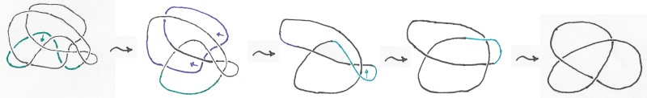
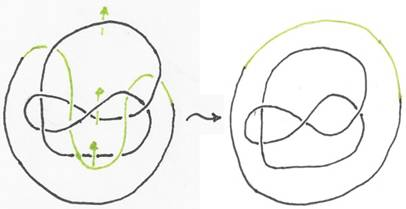
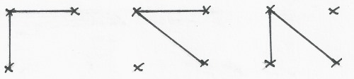
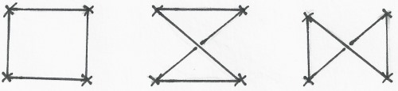
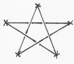
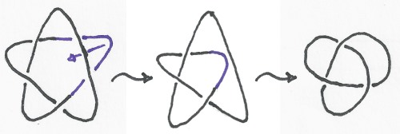

Lösungen zu Blatt 1 (Lukas Graf)
Aufgabe 1:
a) Der Knoten
ist äquivalent zum linkshändigen Kleeblattknoten:

b) Die
Verschlingung ist zerlegbar:

Aufgabe 2:
a) Jeder Knoten
mit vier Endpunkten ist trivial. Dazu prüfe man einfach alle Möglichkeiten
einen Knoten mit genau vier Endpunkten zu zeichnen:
Für die beiden Kanten vom ersten
Eckpunkt gibt es dabei genau drei Möglichkeiten:

Für die übrigen beiden Kanten gibt
es dadurch nur noch eine Möglichkeit:

Und alle diese Knoten sind
offensichtlich trivial.
b) Nein, denn
es gibt einen nicht-trivialen Knoten mit genau fünf Eckpunkten:

Dieser Knoten ist nämlich äquivalent
zum Kleeblattknoten, der sicher nicht trivial ist:
